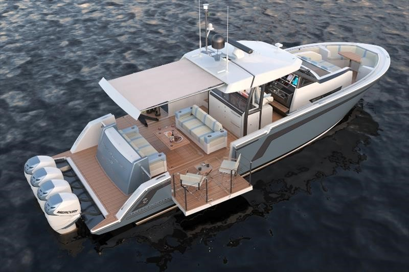

A motorboat, speedboat or powerboat is a boat that is exclusively powered by an engine. Some motorboats are fitted with inboard engines, others have an outboard motor installed on the rear, containing the internal combustion engine, the gearbox and the propeller in one portable unit. An inboard- outboard contains a hybrid of an inboard and an outboard, where the internal combustion engine is installed inside the boat, and the gearbox and propeller are outside.
 There are two configurations of an inboard, V-drive and direct drive. A direct drive has the powerplant mounted near the middle of the boat with the propeller shaft straight out the back, where a V- drive has the powerplant mounted in the back of the boat facing backwards having the shaft go towards the front of the boat then making a V towards the rear.A motorboat has one or more engines that propel the vessel over the top of the water. Boat engines vary in shape, size, and type. Engines are installed either inboard or outboard. Inboard engines are part of the boat construction, while outboard engines are secured to the transom and hang off the back of the boat. Motorboat engines run on gasoline or diesel fuel. Engines come in various types. Engines vary in fuel types such as gasoline, diesel, gas turbine, rotary combustion or steam. Motorboats are commonly used for recreation, sport, or racing. Boat racing is a sport where drivers and engineers compete for fastest boat. The American Powerboat Association (APBA) splits the sport into categories. The categories include inboard, inboard endurance, professional outboard, stock outboard, unlimited outboard performance craft, drag, modified outboard, and offshore. Engines and hulls categorize racing. The two types of hull shape are runabout and hydroplane. Runabout is a v-shape and hydroplane is flat and stepped. The type of hull used depends on the type of water the boat is in and how the boat is being used. Hulls can be made of wood, fiberglass or metal but most hulls today are fiberglass.
High performance speedboats can reach speeds of over 50 knots. Their high speed and performance can be attributed to their hull technology and powerful engine. With a more powerful and heavier engine, an appropriate hull shape is needed. High performance boats include yachts, HSIC (high speed interceptor craft) and racing powerboats. A V-type hull helps a boat cut through the water. A deep V-hull helps keep the boat's bow down at low speeds, improving visibility. V-hulls also improve a boat's speed and maneuvering capabilities. They stabilize a boat in rough conditions.